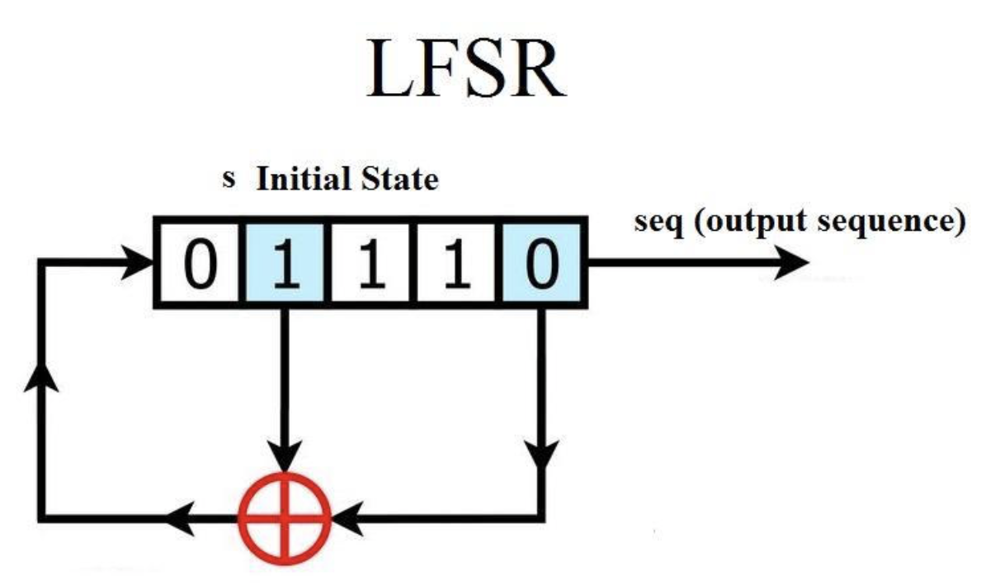

Citation
There are two camps of symmetric ciphers, which are stream ciphers and block ciphers.
Stream ciphers
Steam ciphers encrypte each bit individually. It is achieved by XOR each bit in the key sequence with each plaintext bit. The cipher sequence of the synchronous stream cipher depends only on the key, and the cipher sequence of the asynchronous stream cipher depends on the key and ciphertext. Most stream ciphers used in parctice are synchronous steam ciphers.
Encryption and decryption of steam ciphers
Assume that the plaintext, ciphertext and key sequence are all composed of individual bits, which is \(x_i,y_i,s_i\in{0,1}\), perform modulo 2 addition to each bit \(x_i\) and a key sequence bit \(s_i\), that is, XOR.
Encryption: \(y_i=E_{s_i}(x_i) \equiv (x_i+s_i)mod2 \equiv x_i \oplus s_i\)
Decryption: \(x_i=D_{s_i}(y_i) \equiv (y_i+s_i)mod2 \equiv y_i \oplus s_i\)
It is worth noting that encryption and decryption use the same function, and the generation of the key sequence is the core issue of the security of the stream ciphers.
Random number generator
Generating key sequence is the key to stream cipher, the security of stream cipher depends entirely on the complexity of the key sequence, so randomness is very important.
1. True Random Number Generator(TRNG)
The outstanding feature of the TRNG is that its output cannot be copied. TRNG is generally based on physical processes, such as rolling dice, flipping coins, etc.
For example, if we toss a coin 100 times and record the result of these 100 times as a sequence of 100 digits, almost no one on earth can generate the same sequence as these 100 digits, because the probability of success is only \(1/2^{100}\), which is almost impoossible.
Therefore, TRNG cannot be used for practical purposes, it is too unrealistic!
2. Pseudo Random Number Generator(PRNG)
PRNG starts from an initial seed value and obtains the sequence through various calculations. Generally, PRNG is obtained by recursiveely performing the following calculations: \[ \left{\begin{array}{l}s_0=seed \ s_{i+1}=f(s_i)\end{array}\right. \]
The most common example is a linear congruential generator: \[ \left{\begin{array}{l}s_0=seed \ s_{i+1} \equiv as_i + b,mod,m,i=0,1,…\end{array}\right. \] Where a,b and m are all integer constants.
PRNG is not random in the true sense, because they can be calculated, so it can be said to be calculated. In the C language, a widely used example is the rand() function, whose calculation formula is: \[ \left{\begin{array}{l}s_0=12345 \ s_{i+1} \equiv 1103515245s_i + 12345,mod,2^{31},i=0,1,…\end{array}\right. \]
The general requirement for PRNG is: it must have good statistical characteristics, which means its output is almost the same as the TRNG sequence.
3. Cryptographically Secure Pseudo Random Number Generator(CSPRNG)
CSPRNG is a special case of PRNG, which has an additional attribute: CSPRNG is an unpredictable PRNG. In ohter words, given n consecutive bits in the key sequence, there is no algorithm with a polynomial time complexity that makes the probability of successfully predicting the next bit more than 50%. CSPRNG is commonly used in cryptography.
One Time Pad(OTP)
A perfect key should be unconditionally secure.
unconditionally secure
if a cryptosystem cannot be deciphered even with unlimited computing resources, it means that it is unconditionally secure or theoretically secure.
OTP is an unconditionally secure crypto. OTP must meet the following conditions:
- Generate key sequence through TRNG.
- Only legel communication parties know the key sequence.
- Each key sequence bit \(s_i\) is used only once.
The first condition means that a TRNG is required, it also means that a device that can generate TRNG is needed. This requirement is not so easy to meet but can be met. The second condition means that the sender must safely transmit this random key to the receiver. This may require the sender to hand it to the receiver in person or a reliable messenger, which is not very useful. The third condition means that each plaintext bit requires a key bit. This is the most impractical because the key length must be as long as the plaintext length. This may be the biggest shortcoming of OTP.
It is for these reasons that OTP is rarely used in practice.
Stream Cipher Based on LSFR
The mainstream simple way to get a long PRNG is to us Linear Feedback Shift Register(LSFR). LSFR is easy to use hardware implementation, many stream ciphers are implemented using LSFR, but please note that not all.
Linear Feedback Shift Register(LSFR)
A LSFR consists of several clock storage elements(flip-flops) and a feedback circuit. The number of storage elements gives the degree of LSFR. The feedback network calculates the XOR sum of some flip-flops in the shift register and uses it as the input of the previous flip-flop.

As shown in the figure above, there are a total of 5 bits, of which the second and fifth bit generate XOR sum. As the clock cycle increases, the results are as follows:
1 | ----------------------------------------- |
If you have the patience to continue writing, you will find that when clk=32, the entire state sequence is repeated, that is to say, the state sequence takes 32 clock cycles as a cycle. More generally speaking, when there are \(m\) bits, the state sequence of LSFR takes \(2^m - 1\) as a loop.
The figure below shows the general form of LFSR with degree m. It can be seen from the figure that this LFSR has m flip-flops and m possible feedback positions, and these flip-flops and feedback positions are connected by XOR operation. Whether a feedback path is active depends on the feeback coefficient \(p_0, p_1, …, p_{m-1}\), if \(p_i=1\), this feedback is active, otherwise it is not active.
Assuming that the value of an LFSR initially loaded is \(s_0, s_1,…,s_{m-1}\), the next output bit \(s_m\) of the LFSR(i.e. the input of the leftmost flip-flop) can be calculated by the following formula: \[ s_m \equiv s_{m-1}p_{m-1} + … + s_1p_1 + s_0p_0,mod,2 \] The calculation formula for the next LSFR output is: \[ s_{m+1} \equiv s_mp_{m-1} + … + s_2p_1 + s_1p_0,mod,2 \] It can be concluded that the output sequence can be described as: \[ s_{i+m} \equiv \sum_{j=0}^{m-1} p_{j} \cdot s_{i+j} \bmod 2 ; s_{i}, p_{j} \in{0,1} ; \quad i=0,1,2, \ldots \]